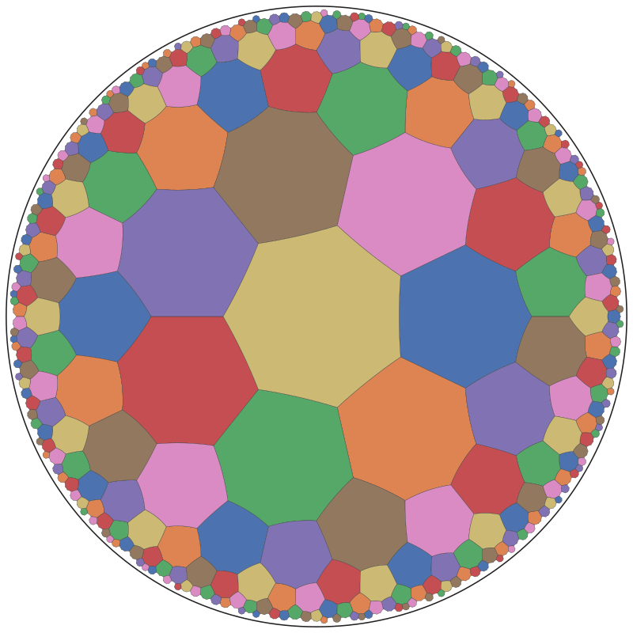
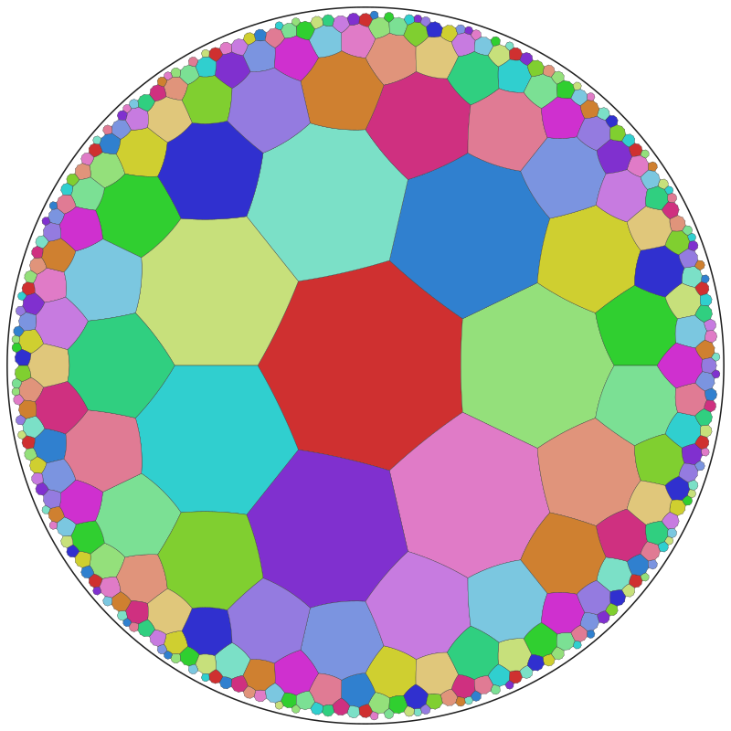
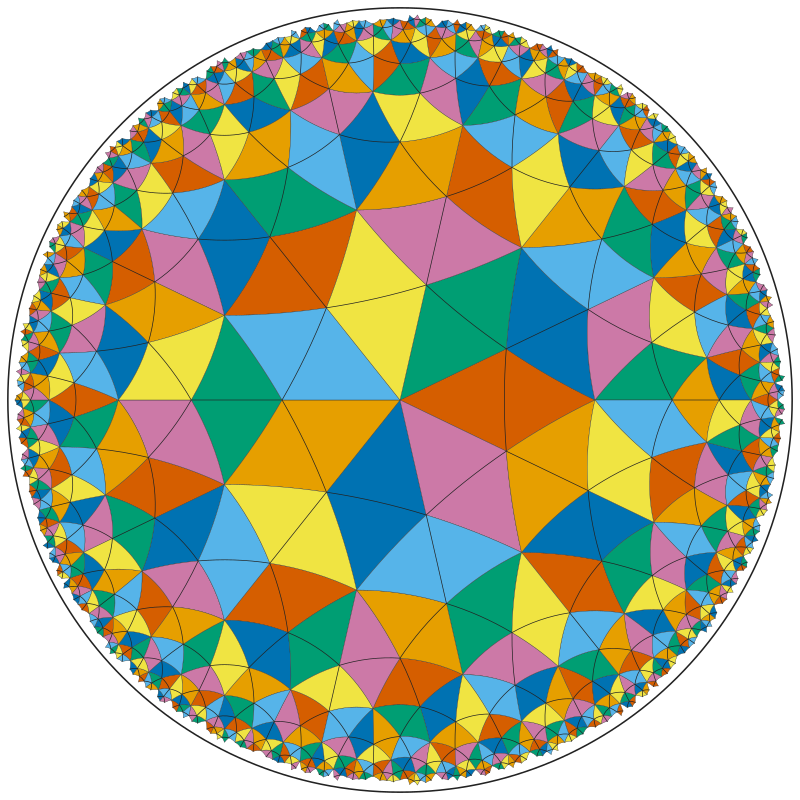
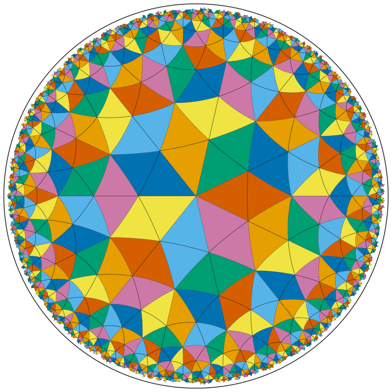

8 colours: H₈ = 337, index 8. x ↦ (0 ∞)(1 6)(2 3)(4 5), y ↦ (0 6 ∞)(1 3 5), xy ↦ (0 1 2 3 4 5 6)
A note for Vladimir. Part I: wallpaper groups. Part II: hyperbolic groups. Short version — yes for transitive colourings, once subgroups are identified under automorphisms rather than conjugacy; the concept has to be kept separate only for colourings in which the group does not carry every colour to every other.
H is the stabiliser of one colour; the colours are the cosets of H — right cosets Hg in the convention "AB = A then B" (Γ acting on the right), and g sends the colour Hx to Hxg. The colour-preserving symmetries form the core K = ⋂ g−1Hg, the largest normal subgroup inside H (The Symmetries of Things calls it the kernel; the symmetry group of the coloured pattern in the modern sense is all of Γ, acting with colour permutations), and Γ/K is the group of colour permutations. Two facts make this clean for wallpaper groups: a subgroup of finite index in a wallpaper group is again a wallpaper group, and by Bieberbach every automorphism of Γ is conjugation by an affine map, so "up to Aut(Γ)" is "up to affine equivalence of the pair (Γ, H)".
This is not a reinterpretation. Van der Waerden and Burckhardt define a Farbgruppe as a group with a distinguished subgroup of finite index. Grünbaum and Shephard (§8.2, p. 405) prove finiteness of the k-colour groups by exactly the algorithm you use — choose generators, associate with each generator in every possible way a permutation of {1,…,k}, subject to the relators — call two results isomorphic when an affine transformation combined with a permutation of colours carries one diagram to the other, and add: "The only difficulty is to discover and eliminate isomorphic groups." Conway, Burgiel and Goodman-Strauss call the same equivalence isotopic reshaping. So: the low-index enumeration of Γ is an enumeration of the k-colour groups, up to Aut(Γ).
A subgroup enumerator returns subgroups as sets (all transitive coset tables: (k−1)! transitive homomorphisms Γ → Sk per subgroup) or, with the conjugacy test switched on, up to conjugacy in Γ. The classical tables — Woods' 46, Wieting's census, Grünbaum–Shephard Table 8.2.1, The Symmetries of Things — count up to Aut(Γ). The simplest instance is Γ = p1 = ℤ² with two colours: three subgroups of index 2, none conjugate to another (Γ is abelian), one two-colour group.
In general p1 has σ(k) subgroups of index k but only #{d : d² | k} colour groups (Smith normal form of the sublattice). Subgroups of index 2 are always normal, so for two colours the conjugacy test removes nothing: the seventeen groups have 74 subgroups of index 2 between them (|Hom(Γ, ℤ2)| − 1 each) against 46 two-colour groups. Recomputed with the enumerator behind catalogue D:
Each cell: subgroups as sets / conjugacy classes / classes under Aut(Γ). The last number is Wieting's; a low-index enumeration that de-duplicates by conjugacy reproduces the middle one.
The mechanism of the collapse is worth stating correctly. Out(Γ) is infinite only for p1 and p2, where it contains GL2(ℤ) — that is why p1's conjugacy column grows like σ(k) while its colour groups stay bounded. For the other fifteen groups Out(Γ) is a small finite group (Out(pm) ≅ ℤ2², Out(pmm) ≅ D4, Out(p4m) ≅ ℤ2, Out(p6m) trivial), generated by half-lattice translations that move mirrors and rotation centres and by the symmetries of the lattice that normalise the point group; those finite outer automorphisms already take pm from 7 to 5, pmm from 15 to 5 and p4m from 7 to 5 at k = 2. Note also that Aut(Γ) contains orientation-reversing maps: the classical counts identify enantiomorphic colourings (p4 with five colours: the ideals (2 ± i) of ℤ[i] count once; under proper equivalence they would count twice, 270 in place of 269 for k ≤ 6).
A subgroup of infinite index — a site-symmetry group (the stabiliser of a point), a single mirror, a frieze subgroup, one translation — is not a colouring with finitely many colours. So "for some number of colours" holds precisely for the finite-index subgroups, which are the subgroups that are themselves wallpaper groups.
Perfect only means that every symmetry permutes the colours; nothing forces the permutation group to be transitive. If your enumerator really assigns permutations to the generators and checks the relators over all of Sk, it produces every homomorphism Γ → Sk, transitive or not; the low-index coset-table method produces only the transitive ones. An intransitive perfect colouring is a coloured wallpaper group that corresponds to no single subgroup: as a Γ-set the colours split into orbits Γ/H1 ⊔ … ⊔ Γ/Hm, so the object is a multiset of conjugacy classes of subgroups with Σ [Γ:Hi] = k, taken up to Out(Γ) acting on all of them at once — and not even the multiset of colour-group types determines it, because the relative position of the Hi matters (the kernel is ⋂ core(Hi)). Transitivity is automatic when Γ has a single orbit on the motifs (a coset colouring, a colouring of the tiling by fundamental domains), so a counterexample needs at least two orbits of motifs or tiles under Γ. Grünbaum and Shephard keep these out of the k-colour groups and file them separately as (k1,k2)-chromatic patterns (§8.8; their Figure 8.8.5 colours the triangle and kagome tilings this way).
A three-colour version is shorter but degenerate: dots by x-parity, every dash blue — Γ/H1 ⊔ Γ/Γ, kernel of index 2 ≠ 3, one colour fixed by everything.
If one means the colour-preserving group K rather than the stabiliser H, the correspondence breaks in the other direction: K = core(H) is normal and does not determine the colouring — the dot/dash example already shows it. A transitive instance: in p4m take K = the translation lattice ℤ² (Γ/K ≅ D4). H1 = ℤ² ⋊ ⟨axis mirror⟩ (type pm, **) and H2 = ℤ² ⋊ ⟨diagonal mirror⟩ (type cm, *×) are index-4 subgroups with the same core K and the same permutation image D4 — the two faithful transitive actions of D4 on four points, vertices versus edges of a square — and they are two different 4-colour groups of p4m (c4-p4m-2, c4-p4m-3): pm ≇ cm, so no automorphism can identify them. In the notation of The Symmetries of Things, which puts the kernel in the denominator, both are written *442⁴/◦ — which is exactly the point: (Γ, K), even with the abstract permutation group attached, is coarser than the colouring, and H is the datum. In the finer direction, a coloured pattern (motif with nontrivial stabiliser S) is the chain S ≤ H ≤ Γ up to simultaneous conjugacy — the 88 two-colour pattern types against the 46 two-colour groups (and 609 types over the 286 colour groups with k ≤ 6).
Coloured groups in the standard, transitive sense are the finite-index subgroups; the list matches the classical one exactly when subgroups are identified under Aut(Γ) rather than under conjugacy. Keep "coloured group" as a separate idea only for the intransitive perfect colourings, which are finite Γ-sets — several subgroups plus their relative position. Simplest counterexamples: p1 with two colours (three subgroups, one colour group) for the equivalence, and p1 with two motif orbits and four colours for a coloured group that is no subgroup. For the Russian-school vocabulary: Belov's colour groups (cyclic colour permutation) are the normal H with cyclic Γ/H; the 80 Shubnikov plane groups are 17 + 17 grey + the 46 here — the grey groups Γ × ℤ2 are not colourings in this sense.
Now let Γ be a cocompact discrete group of isometries of the hyperbolic plane — a hyperbolic orbifold group, *237, 237, *2223, ◦◦ and so on (an NEC group when reflections are allowed, a Fuchsian group otherwise). The dictionary of §1 is pure algebra and carries over word for word: transitive perfect k-colourings ↔ subgroups H of index k, colours = cosets, colour-preserving group = core, permutation group = Γ/K; the low-index enumeration is an enumeration of the colour groups; every finite-index subgroup is again a cocompact hyperbolic orbifold group, so every colour group of Γ is a hyperbolic tiling group in its own right. Sections 2(b), 2(c) and 4 also carry over verbatim: infinite-index subgroups (a point stabiliser, a single mirror) are not colourings; intransitive perfect colourings are Γ-sets, i.e. several subgroups with their relative position; the kernel does not determine H.
One thing becomes more constrained. In the plane every finite-index subgroup of a wallpaper group is one of the 17 types, with no restriction from the Euler characteristic; in ℍ² the covering relation χ(OH) = k·χ(OΓ) (Riemann–Hurwitz) fixes the orbifold Euler characteristic of H, so at index k only the finitely many orbifolds with that χ can occur, and they can be read off the coset table: each cycle of length d < n of an order-n generator on the cosets is a cone point of order n/d of H. For 237 (χ = −1/42) the first subgroups are at index 7 (signature 2223), 8 (337), 9 (277) — the classical inclusions of Singerman — and index 24 contains 777.
There is no Bieberbach theorem in ℍ². For a wallpaper group, "the same colouring up to a change of coordinates" and "the same colouring up to an abstract automorphism of Γ" coincide, and that is what makes Wieting's numbers canonical. For a hyperbolic group there are two candidates, and they differ:
For rigid orbifolds — Teichmüller dimension 0: the triangle groups pqr and *pqr together with p*q — the two agree: every automorphism is an isometry and Out(Γ) is finite. It is trivial for *pqr with p, q, r distinct, so for a reflection triangle group with distinct labels the conjugacy classes of subgroups already are the colour groups — nothing to identify. For the rotation group pqr (p, q, r distinct) Out is ℤ2, the reflection of *pqr: it pairs each colouring with its mirror image, so a colour group and its enantiomorph count once up to isometry, twice up to proper isometry — the hyperbolic version of the (2 ± i) five-colouring of p4. When labels repeat the symmetries of the triangle appear (Singerman: *ppr ⊂ *2p2r of index 2, *ppp ⊂ *23(2p) of index 6, and similarly for the rotation groups), and the isometric normaliser is the largest triangle group containing Γ.
Computed with a Sims low-index enumerator written for this note (enumerate/lowindex.py, run by enumerate/lowindex_237.py; standardised coset tables; the totals were checked independently against Frobenius' formula |Hom(Γ, Sn)| = (1/n!) Σχ A2(χ)A3(χ)A7(χ)/χ(1) with Hall's transitive recursion for every n ≤ 40, and the *237 counts against brute force for k ≤ 9). Only the indices with subgroups are listed; the smallest proper subgroup of 237 has index 7, of *237 index 2. Signatures are read off the coset tables (for *237 using the reflection generators as well, since mirrors and corners are not visible in the elliptic cycles alone) and satisfy χ = −k/42, resp. −k/84.
| k | classes | subgroups | up to *237 | orbifolds of H |
|---|---|---|---|---|
| 7 | 2 | 14 | 1 | 2223 ×2 — a mirror pair (Fano points / lines), same core |
| 8 | 1 | 8 | 1 | 337 |
| 9 | 1 | 9 | 1 | 277 |
| 14 | 9 | 84 | 6 | 2233 ×9: two PSL(2,7) (a mirror pair), three PSL(2,13), four of order 1344 = 2³·PSL(2,7) (two mirror pairs) |
| 15 | 3 | 45 | 2 | 2227 ×3 |
| 21 | 9 | 189 | 5 | 22222 ×5, 2333 ×4 |
| 22 | 13 | 286 | 7 | 2237 ×13 |
| 24 | 1 | 8 | 1 | 777 — the Klein quartic |
| 28 | 42 | 1092 | 25 | 22223 ×36, 3333 ×5, ◦3 ×1 |
| 29 | 14 | 406 | 7 | |
| 30 | 12 | 225 | 8 | |
| 35 | 92 | 3220 | 47 | |
| 36 | 42 | 1512 | 22 | |
| 37 | 15 | 555 | 8 | |
| 42 | 251 | 8799 | 137 | |
| 43 | 192 | 8256 | 96 | |
| 44 | 16 | 418 | 10 | |
| 45 | 2 | 90 | 1 |
237: conjugacy classes of subgroups of index k / subgroups as sets / classes under the isometric normaliser *237 (the reflection swaps mirror-image subgroups; this is the count of colour groups up to isometry, and also up to Aut(237), since Out(237) = ℤ2). Every image is inside Ak.
| k | classes = colour groups | subgroups | orbifolds of H |
|---|---|---|---|
| 2 | 1 | 1 | 237 |
| 8 | 1 | 8 | 3*7 |
| 9 | 1 | 9 | 7*2 |
| 14 | 4 | 56 | 2223, 23*, 23× ×2 |
| 15 | 1 | 15 | 2*27 |
| 16 | 1 | 8 | 337 |
| 18 | 1 | 9 | 277 |
| 21 | 1 | 21 | 22*2 |
| 22 | 1 | 22 | 2*37 |
| 24 | 1 | 8 | *777 |
| 28 | 13 | 252 | *3×, 2*223, 22*3, 33*, 33×, 2233 ×6, … |
| 30 | 7 | 165 | *2727, 27*, 27× ×3, 2227 ×2 |
| 35 | 2 | 70 | |
| 36 | 2 | 72 | |
| 37 | 1 | 37 | |
| 42 | 31 | 1071 | |
| 44 | 12 | 462 | |
| 48 | 1 | 8 | 777 |
*237: here N(Γ) = Γ and Out(Γ) is trivial, so the conjugacy classes are the colour groups — no further identification. Subgroups with mirrors, glides or both occur (3*7, 23×, *777); the orientation-preserving classes at index 2k are exactly the 237 classes at index k counted up to the reflection.
Two things to read off. First, at every index the "subgroups" column is far larger than the "classes" column — the low-index output must be de-duplicated by conjugacy, exactly as in the plane. Second, the further collapse that Wieting's tables perform in the plane is here at most a factor of two (237: pairs of mirror-image colourings) or absent (*237): for a rigid hyperbolic group the conjugacy classes are essentially the final answer, because Out(Γ) is small — the opposite of p1, where σ(k) subgroups collapse to the far smaller number of factorisations k = d1d2 with d1 | d2. Kernels behave as in §4: the Klein-quartic kernel K (index 168) is the core of both index-7 classes, of the index-8, index-24 and one index-21 class, and of two index-14 classes — seven different colour groups at index ≤ 24 with the same colour-preserving group and the same permutation group PSL(2,7) (and more beyond: every proper subgroup of the simple group PSL(2,7) pulls back to one).
The best-known hyperbolic colouring is a subgroup in disguise. The rotation group 237 maps onto PSL(2,7), of order 168, with kernel K = the fundamental group of the Klein quartic (index 168, a surface of genus 3). Every subgroup of PSL(2,7) pulls back to a subgroup of 237 containing K, i.e. to a perfect colouring of the {7,3} tiling whose colour-preserving group is K and whose colour permutations are PSL(2,7):
All four have the same kernel K and the same permutation group PSL(2,7): a hyperbolic instance of §4 — the kernel, even with the abstract permutation group attached, does not determine the colouring. And the intransitive case of §2(c) is one line away: colour the heptagons with the 24 Klein-quartic colours and the vertices (stabiliser 3, 56 of them on the quartic) with 56 further colours — a perfect 80-colouring with permutation group PSL(2,7) and kernel K that is the Γ-set Γ/H24 ⊔ Γ/H56, no single subgroup.




Everything algebraic survives the passage to ℍ²: transitive colour groups are the finite-index subgroups, intransitive ones are unions of subgroups, and the low-index enumeration lists them — now with Riemann–Hurwitz telling you in advance which orbifolds can appear at which index. What has no hyperbolic analogue is the canonical equivalence: in the plane Bieberbach makes "same up to coordinates" and "same up to an automorphism" agree, and that is what turns a subgroup list into Wieting's table; in ℍ² one must choose. For a picture with a fixed fundamental polygon the honest choice is the isometric normaliser N/Γ, a finite group — trivial for the maximal reflection triangle groups *pqr, where the conjugacy classes of subgroups are the colour groups with no further identification at all, and ℤ2 for pqr, where the reflection pairs enantiomorphic colourings. The three lists "up to conjugacy", "up to isometry" and "up to automorphism" can differ only when the orbifold has moduli, and they actually differ when the mapping class group is larger than the isometry group of the chosen structure — as soon as the orbifold has a handle or is a sphere with four or more cone points. Then the answer to "are subgroups the same as colourings?" is: yes, but you have to say which equivalence you mean, and no table in the literature has said it for you.